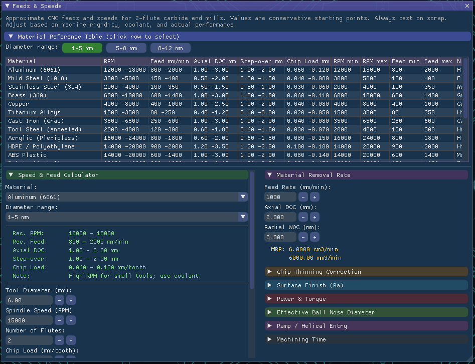
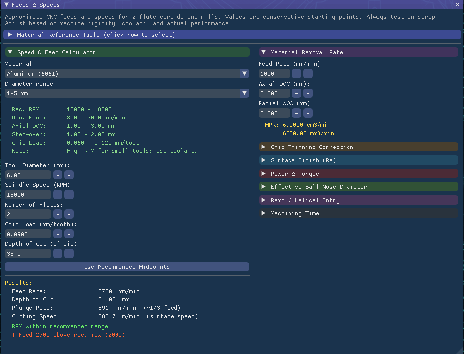

Optimize Your Machining Parameters
The Feeds & Speeds Module is an essential tool for any CNC operator or programmer. It provides comprehensive calculations and recommendations to achieve optimal machining performance, extend tool life, and ensure superior surface finish across a wide range of materials and tools.

Precision Calculation Interface

Achieve Optimal Toolpath Performance
Key Features
- Comprehensive Material Database: Access recommended feeds and speeds for various materials and tool types.
- Chip Thinning Correction: Accurately adjust chip load for optimal cutting efficiency, especially in light radial cuts.
- Surface Finish Prediction: Estimate surface roughness (Ra) based on tool geometry and machining parameters.
- Power & Torque Analysis: Calculate spindle power and torque requirements to prevent machine overload and ensure stable cutting.
- Effective Ball Nose Diameter: Determine the effective cutting diameter for ball nose end mills at different axial depths of cut.
- Ramp & Helical Entry Calculations: Optimize entry strategies to reduce tool wear and improve machining stability.
- Machining Time Estimator: Quickly estimate job completion times based on toolpath length and feed rates.
This module empowers you to make informed decisions, leading to higher quality parts, reduced production costs, and extended lifespan for your cutting tools.